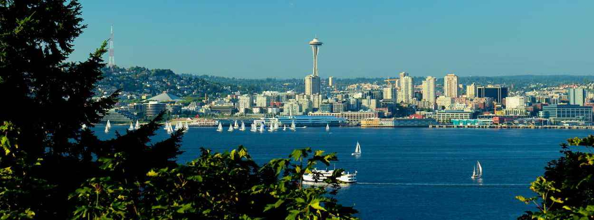
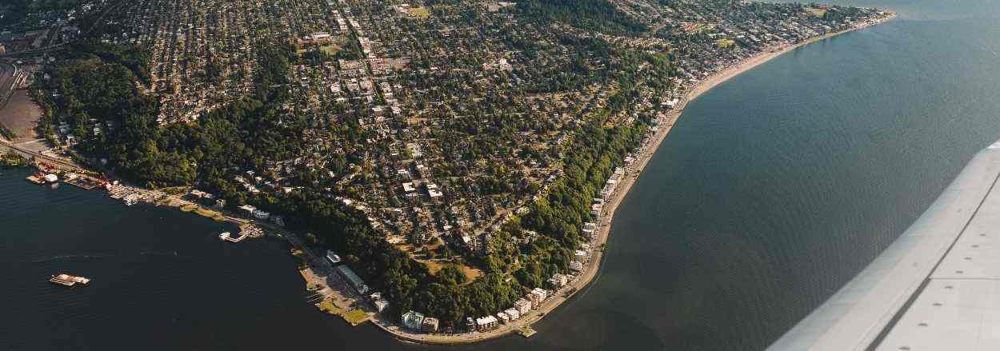
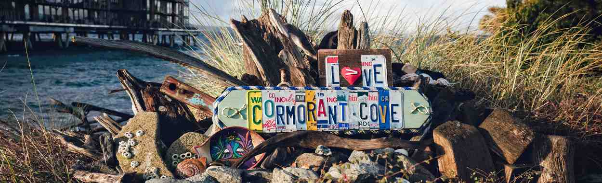

Welcome to West Seattle
About Us
West Seattle is located at the westernmost point of the city of Seattle, and offers spectacular views of the Olympic Mountains to the west and the Cascade Range to the east. This historic neighborhood is composed of several smaller micro-neighborhoods, including Admiral, Fauntleroy, and Delridge. The thread that ties them all together? People march to the beat of their own drum here, and don't seem to mind being connected to Seattle mainly by bridge.
Around The Block
West Seattle:
West Seattle is most well-known for the iconic Denny Party landing of 1851, where the New Yorkers first met a group of Duwamish Indians led by chief Si'ahl (Seattle later became his namesake). As the neighborhood has grown, it has fiercely advocated for funding to add bridges, highways, and ferries to facilitate easy access to the rest of Seattle. Paradoxically, it has also maintained a strong desire to stay rooted in its independence. This self-sufficient attitude is what makes West Seattle a great place to live -- you could leave, but with such excellent amenities, dining options, and beautiful parks, you might not even want to.
What To Expect:
A small town with big city conveniences.
If you ask people who don't live in West Seattle, they might say that it feels isolated from the city, but the area's actual residents say that as long as you avoid rush hour, it's the perfect place to be. West Seattle is most accurately summed up as a “small town with big city conveniences”. Residents enjoy easy access to grocery stores, shops, and schools by foot, and a well-connected public transportation system for everywhere else. People here are down-to-earth, tend to dress casually, and are very friendly. Recent developments have locals comparing it to an up-and-coming Ballard, with a beach-town twist.
The Lifestyle:
For those lucky few who aren't too pressed for time.
It would be difficult to find a more iconic way to spend a Seattle evening than at a bonfire on Alki beach. First, stop by Pegasus Pizza, a casual institution whose homemade crust is only enhanced by the sounds and smells of the ocean next door. Tom's Special pizza features shredded pepperoni, and is described exclusively with superlatives. Once you're fed, snag a rental bike and enjoy the cool evening air as you ride along the water. Breathe deep. Watch as the sun sets behind the horizon and as the skyline melts into twinkling night lights.
Unexpected Appeal:
A charming place where you'll want to eat around the block.
The intersection of Alaska Street and California Avenue serves as West Seattle's downtown, and it's where you can find a week's worth of shopping, dining, concerts, and more. It is affectionately called “The Junction”, or sometimes “Alaska Junction”, and is chock-full of the most unique, drool-inducing eateries you've ever seen. For an extraordinary selection of tap beers and bottles, The Beer Junction is a must-visit. This tap house features over 1,300 types of cold beer and an equally chilled atmosphere. If it's something sweet, buttery, and flaky you're after, Bakery Nouveau is the place to be. We hear the twice baked chocolate croissant is divine.
You'll Fall In Love With:
Doing things your own way.
People who are attracted to West Seattle tend to be those who effortlessly shrug off the yoke of conformity. They are often ahead of trends, and don't mind straying off the beaten path, because they know the rewards are great. The Denny Party may have first landed over a century ago, but the creative, adventurous spirit they brought lives on in West Seattle.
Upcoming Events
Merry & Bright Music Night
December 17 @ 7pm
Join us for a joyous evening of heartwarming holiday song! Tickle your nostalgia and ignite your cheer in this moment of togetherness as we escape the winds of winter. Let the sparkly piano and vocal stylings of Julianne Thoma and Holly The Riot illuminate your season!
Get Fit Info Night
@ West Seattle Runner
December 20 @ 6:30pm
Come to learn more about our Get Fit West Seattle training program. We will give you the tools necessary to begin a training program to get ready for a half marathon. The plan includes two weekly group runs, info clinics and a group dynamic to increase your motivation.
Classic Novels (and Movies)
Book Club of West Seattle
January 20 @ 7pm
Meeting of the West Seattle “Classic Novels (and Movies” Book Club, to discuss three Christmas-themed stories:
1.Nikolai Gogol
2.Truman Capote
3.Dylan Thomas
Trivia and Tacos
January 25 @ 6pm - 9pm
Every Tuesday Trivia and Tacos
Trivia starts at 7 pm and goes to 9 pm. Currently Admiral Pub is the northwest champion at TapTV Trivia. For the next 8 weeks we will be defending our title.
Fun facts on West Seattle
West Seattle is the oldest and the biggest of Seattle's neighborhoods is both a peninsula and a state of mind. The first Euro-American settlers arrived here (on Alki Point) in 1851, but left within a few months, moving to a more agreeable location on the other side of Elliott Bay (the site of present-day downtown Seattle). Orphaned at an early age, isolated by water on three sides, West Seattle has clung to its cultural independence, remaining determinedly aloof even while fighting tenaciously for the bridges, highways, and ferries that have brought it closer to its sprawling neighbor to the east. The current population is 27, 055.
The West Seattle Chamber of Commerce is ready to work with you to improve the lives of the community. Your Growth is our Focus and we will join you in your journey of development.


Useful Links
Contact Us
5841 Milwaukee Ave, West Seattle,
WA 98003, United States
509.989.644
wseattlecoc@westseattle.com